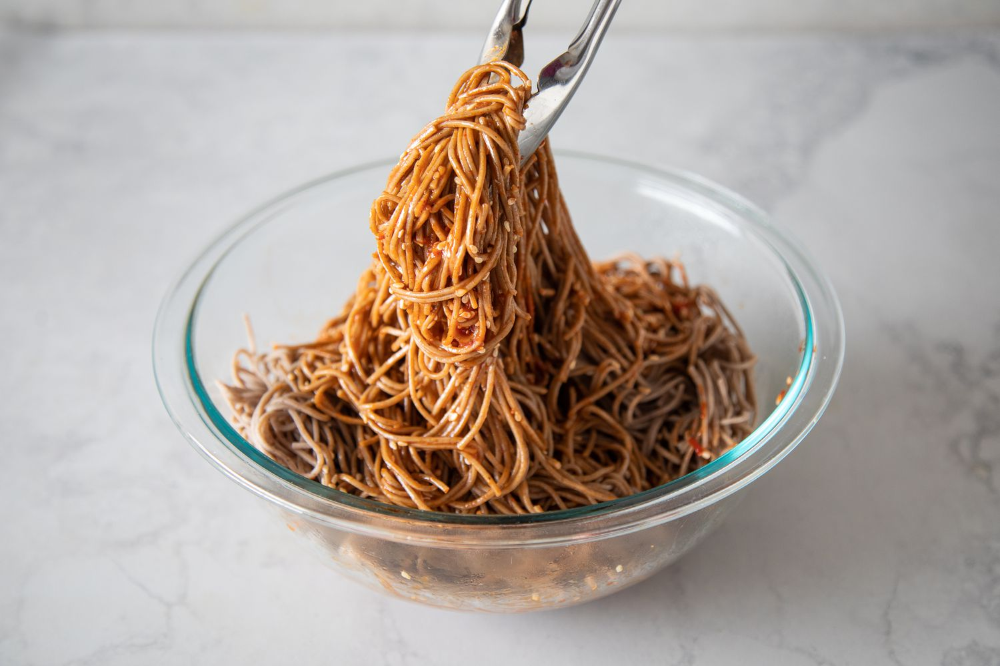

Bibim Guksu: cold and spicy noodles

Description
Delicious cold noodles in a sweet and spicy sauce. Perfect for lunch and so easy to make.
Ingredients
Note that the proportions are an indication, I mostly just eyeballed while making the sauce
Add less Gochujang if you cannot handle spices well, add more sugar if you have more a sweet tooth.
- Glass noodles or buckwheat noodles
- Gochujang (1tbsp) -korean chili paste-
- Soy sauce (10cl)
- Oyster sauce (a dash)
- Sesame oil (2-3tbps)
- White sugar (2tsp)
- Sesame seeds
- Spring onion -optionnal-
Instructions
- Cook the noodles and rinse them in cold water
- In a Deli container, mix the Gochujang, soy sauce, oyster, sesame oil, white sugar and sesame seed
- Cut the spring onion
- Add the noodles to the Deli container, close the lid and give it a good shake
- Sprinkle some green onion on top and enjoy!